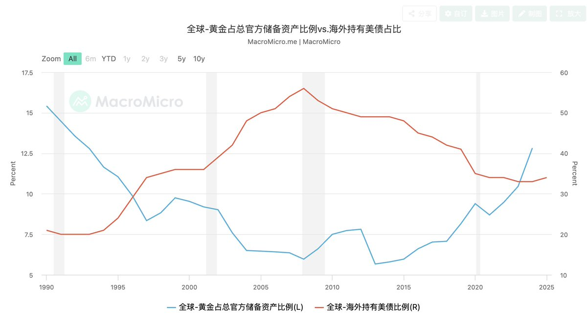

*⁂汐渋鈴蘭⁂*.･ﾟﾟ
@SupernovaLLan
@yuu00401 感觉这个说法倒是有点靠谱的

梁岷Liam
@Lyangminn
一个关于黄金的阴谋论。
黄金暴跌原因？
其实这是因为黄金超过5300美元时候，整体市值超过了全部美债存量市值，进而引发了系统性的抛售。
大家在思考一件事：黄金会不会大到“不被允许再继续吸纳全球避险资金”。
在当前体系下：
黄金 ≈ 非主权、非信用、零收益资产
美债 ≈ https://t.co/aZZPQ2ubGT
yuu🎀
@yuu00401
哪条狗凌晨砸我盘? https://t.co/ADU3ojyJpz